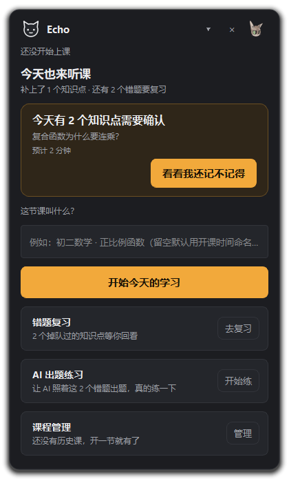
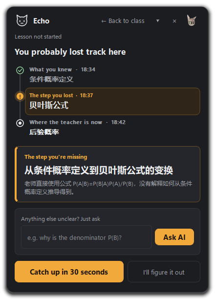
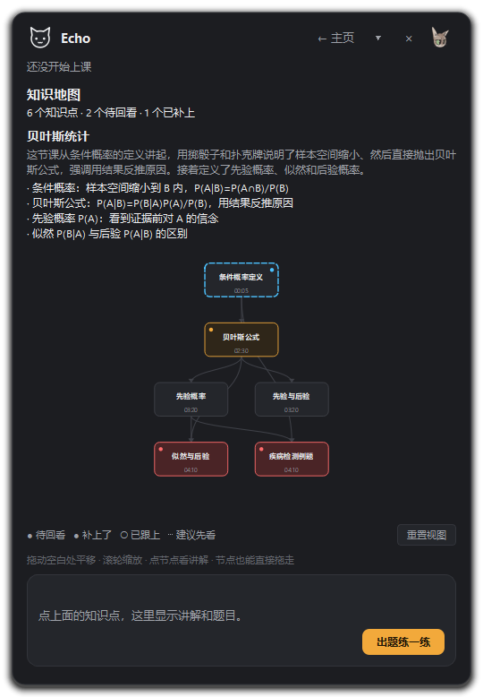
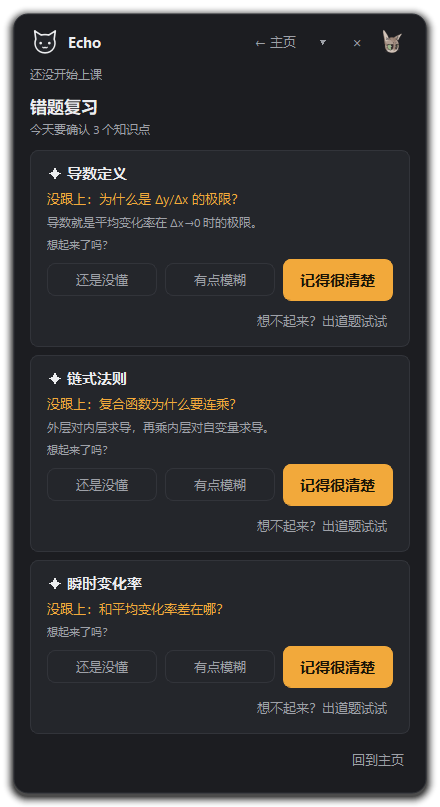

不替你听课，只在你掉队的时候，把缺失的那一步补上。约 30 秒，立刻回到课堂。
支持腾讯会议 / Zoom / B 站 / Coursera / 录播课
中英文双语 · Whisper 模型随安装包内置

老师讲到 18:39 跳过了一步推导，你从那一刻开始听天书。
后面 15 分钟 全在白听。
想回头补，进度条拖来拖去，找不到到底是从哪句开始断的。

不是把整节课丢给 AI。Echo 结合实时转写、知识点时间轴和前置依赖，找到你真正没懂的那一步。
Echo 回看最近 5 分钟转写与知识点时间轴，判断哪些前置概念你已经掌握，避免重复讲解浪费时间。
回看窗口 300s结合当前概念与前置依赖，DeepSeek 输出结构化结果：你在哪里开始没听懂、缺失的是哪一步、为什么会卡。
DeepSeek · 12s 超时兜底只补缺失的那一步，用「你已经知道 → 中间漏了这一步 → 所以现在能听懂」的三段式讲法。补完一键回到课堂。
三段式 · 不重讲整节课每个功能都为了一个目标：让你不掉队，或者掉队了也能马上追回来。
WASAPI 环回捕获系统声音，faster-whisper 本地模型实时转写，延迟低于 2 秒。戴耳机也能用，腾讯会议 / Zoom / B 站 / 录播课都能听。
每 20~60 秒，AI 把老师讲的内容切成一个知识点：概念名、前置依赖、一句话总结。一节课下来，你有一条完整的时间轴。
点一下，Echo 回看最近 5 分钟转写 + 时间轴 + 反馈历史，让 DeepSeek 输出：断点位置、缺失概念、为什么卡、30 秒微讲解。这是 Echo 的核心。
不是重讲整节课，而是：你已经知道 → 中间漏了这一步 → 所以现在能听懂。30 秒，回到课堂继续听讲。
断点页直接打字追问，Echo 带上课堂上下文让 DeepSeek 解答。不会脱离当前知识点，也不会重讲整节课。
全屏圈画 + 批注，把看不懂的公式或图表截图给 Qwen-VL 视觉模型讲解，支持追问。没填 key 时自动退回 DeepSeek 视觉。
常驻桌面的小猫，声纹条跟着老师声音真实起伏。课堂抽问时会喊你答题；窗口不在面前时亮红点，点一下桌宠调出来。
关掉窗口仍在后台听课。Ctrl+Alt+L 掉队、Ctrl+Alt+E 显示隐藏、Ctrl+Alt+Q 圈一下——快捷键被占用时自动切换备用键。
下课后一张掌握度地图：这节课讲了什么（一段话总结 + 要点）、时长 / 知识点数 / 转写字数、每个知识点 ✓⚠!，掉队点一路追溯到该复习的前置。
AI 自动构建知识点网络，梳理前置 / 后继依赖。绿色已掌握、黄色曾掉队已补回、红色待回看。点击节点即可定位复习或出题。
每节课的掉队点自动存进错题本，重启后主页可回看、标掌握。不用手动整理，掉一次就记一次。
照着你的错题让 DeepSeek 出题：选择题 + 简答题，带答案和解析。离线时自动用兜底题，不影响练习。
费曼式自测：不直接给答案，先听你讲，再追问薄弱处。能讲出来才是真懂了。讲完 Echo 给你打分并指出哪里漏了。
主页启动页：给这节课命名并开始，错题复习、AI 出题、历史课程一应俱全。点进任意一节课看完整回顾。
没有复杂的新手引导也没关系，照着下面四步走一遍，三分钟就能开始第一次「掉队急救」。
从下方「免费下载」拿到 Windows 安装包，双击一路下一步。装完从桌面或开始菜单启动 Echo。
正常打开腾讯会议 / Zoom / B 站 / 录播课，Echo 在后台自动抓取电脑正在播放的声音，实时转写并每 30 秒左右切出一个知识点。你什么都不用做，继续听课就行。
主窗口有三个按钮，随时点击反馈你的状态：
课程结束点「结束」，Echo 生成这节课的掌握度地图：一段话总结这节课讲了什么、时长 / 知识点数 / 转写字数、每个知识点 ✓⚠! 状态，以及掉队点一路追溯到该复习的前置。
从课堂上的断点定位，到下课后的知识地图与复习卡——每个界面都为「快速回到课堂」服务。

前置 / 后继依赖一目了然，颜色即掌握度

掉队点自动沉淀，可折叠、可出题、可标掌握
离线可用、隐私安全、低延迟——模型随安装包内置，音频不出本机。
WASAPI 系统声音环回 / 麦克风输入，静音切句，任何网课软件都能听。
Faster-Whisper 本地模型 + 热词（已识别知识点），延迟低于 2 秒。
DeepSeek：知识点切片 + 断点定位 + 追问 + 出题。核心壁垒所在。
PyQt5 悬浮窗 + 桌宠 + 托盘 + 全局快捷键，不打断听课心流。
转写完全在本地完成，安装包内置 Whisper small 模型。断点分析和 AI 功能默认调用 DeepSeek，需要联网；无网络时 Echo 自动退化为规则兜底，界面仍可正常使用。
音频和转写文本只保存在你的电脑本地。只有在你主动点击「我掉队了」或追问时，相关片段才会被发送给 LLM 进行分析，且只发送最小必要的上下文。
理论上支持所有能发出声音的软件：腾讯会议、Zoom、B 站、Coursera、网易云课堂、本地录播播放器——只要 Echo 能捕获到系统声音，就能工作。
Windows 10/11 均可运行。Whisper small 模型对 CPU 友好，内存建议 8GB 以上。转写时若遇内存不足报错，在设置里把 Whisper 线程数降到 2 或 1 即可。
Echo 检测到 Ctrl+Alt+L 被占用时会自动切换到 K / J / F9 中的一个可用键，设置界面会显示当前实际生效的快捷键。
Windows 10 / 11 · 免费下载 · 本地模型离线可用
最新版 · 内置 Whisper 转写模型
历史版本 · 更新日志 · 校验信息
下载地址：github.com/troy-git-hub/hackathon/releases